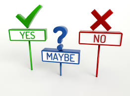
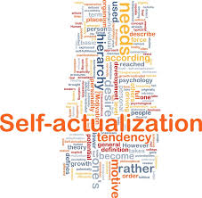

Week 1
Thesis
Thesis - A statement or theory that is put forward as a premise to be maintained or proved.Paraphrase: A statement that will be proved.
Synonyms: Theory + Argument
Antonyms: Fact + Proof
Sentence: I disagreed with the basis of his thesis on his report on the article.
Anecdote
Anecdote - A short amusing or interesting story about a real incident or person.Paraphrase: A short story about a real thing.
Synonyms: Story + Tale
Antonyms: Biography + Chronicle
Sentence: Your anecdote about the flight was funny.

Paraphrase
Paraphrase - Express the meaning of anything, using different words, especially to achieve greater clarity.Paraphrase: Write something again in a more clear way.
Synonyms: Reword + Rephrase
Antonyms: Repeat + Copy
Sentence: In order to paraphrase sentences, one must have good writing skills.
Summary
Summary - A brief statement or account of the main points of something.Paraphrase: A quick explanation of something.
Synonyms: Synopsis + Digest
Antonyms: Lengthy + Slow
Sentence: Your summary of his article was missing his main points.

Analyze
Analyze - Discover or reveal something through detailed examination.Paraphrase: Learn something by watching.
Synonyms: Examine + Inspect
Antonyms: Forget + Neglect
Sentence: The goal is to analyze the data, not to mess around.

Citation
Citation - A quotation from, or reference from a book, paper, or author, especially in scholarly work.Paraphrase: A quote from something.
Synonyms: Quote + Excerpt
Antonyms: Sermon + Censure
Sentence: He had so many citations on his paper.
Ambiguous
Ambiguous - Open to more than one interpretation.Paraphrase: Many explanations.
Synonyms: Cryptic + Dubious
Antonyms: Certain + Obvious
Sentence: The interviewer's questions were ambiguous.

Pertinent
Pertinent - Relevant or applicable to a particular matter.Paraphrase: Relevant
Synonyms: Relavant + Suitable
Antonyms: Improper + Relevant
Sentence: The information she listed wasn't pertinent.
Fallacious
Fallacious - Based on a mistaken belief.Paraphrase: Mistaken inference.
Synonyms: Phony + Wrong
Antonyms Correct + True
Sentence: The securing of riches is a fallacious achievement, it brings more bad than good.
Ambivalent
Ambivalent - Having mixed feelings about something or someone.Paraphrase: Mixed feelings.
Synonyms: Contradictory
Antonyms: Unequivocal + Certain
Sentence: He was ambivalent about going to Disney World.

Week 2
Self-Actualization
Self-Actualization - The realization or fulfillment of one's talents and potentialities.Paraphrase: The fulfilment of one's talent/s.
Synonyms: Self-Discovery + Self-Esteem
Antonyms: Self-Destruction + Self-Sabotage
Sentence: He was on the podium at the olympics, achieving self-actualization

Introvert
Introvert - A shy, reticent person.Paraphrase: A shy person.
Synonyms: Shy + Quiet
Antonyms: Extrovert + Outgoing
Sentence: He was kind of like an introvert at first, but then he opened up.
Extrovert
Extrovert - An outgoing, overtly expressive person.Paraphrase: An outgoing person.
Synonyms: Outgoing + Bubbly
Antonyms: Introvert + Quiet
Sentence: He was a very talkative extrovert.
Kinesthetic
Kinesthetic - Relating to a person's awareness of the position and movement of the parts of the body.Paraphrase: A person who understands and knows how or where their body part are.
Synonyms: Bodily + Physical
Antonyms: Proprioception + Kinesthesis
Sentence: He was a kinesthetic learner.
Taxonomy
Taxonomy - The branch of science concerned with classification.Paraphrase: The science of classification.
Synonyms: Classification + Assortment
Antonyms: Declassification + Unorganized
Sentence: He was a taxonomist.

Protagonist
Protagonist - The leading character or one of the major characters.Synonyms: Mainstay + Supporter
Antonyms: Antagonist + Stranger
Sentence: The protagonist was on the light side.
Antagonist
Antagonist - A person who actively opposes or is hostile to someone or something.Paraphrase: An adversary.
Synonyms: Adversary + Foe
Antonyms: Protagonist + Good-Guy
Sentence: The antagonist was on the dark side.
Flashback
Flashback - A scene set in a time earlier than the main storyParaphrase: Something that happened earlier.
Synonyms: Transition + Preview
Antonyms: Flash-Forward + Volley
Sentence: She had a flashback to Vietnam.
Foreshadow
Foreshadow - Be a warning or indicator of a future event.Paraphrase: A warning for what is to come.
Synonyms: Point + Forecast
Antonyms: Node + Beginning
Sentence: He was foreshadowing the event.
Characterization
Characterization - The creation or construction of a fictional character.Paraphrase: Creating a character.
Synonyms: Depiction + Description
Antonyms: Unify + Attatch
Sentence: The reporter was critisized for his characterization of the people of the town.
Week 3
Theme
Theme - The subject of a talk, a piece of writing, a person's thoughts, or an exhibition.Paraphrase: A topic
Synonyms: Subject + Point
Antonyms: Tangent + Digression
Sentence: The theme of the story was flowers.
Cerebral
Cerebral - Of the cerebrum of the brain.Paraphrase: Part of the brain.
Synonyms: Head + Brain
Antonyms: Ignorance + Body
Sentence: The cerebral cortex is an essential part of your brain.
Susceptible
Susceptible - Likely or liable to be influenced or barred by a particular thing.Paraphrase: Liable to be influenced by something.
Synonyms: Affects + Liable
Antonyms: Unlikey + Unsusceptible
Sentence: She was susceptible to illnesses after her surgery.
Ambidextrous
Ambidextrous - Able to use left and right hand equally well.Paraphrase: Dominant with both hands.
Synonyms: Dominant + Dexterous
Antonyms: Dextral + Left-Handed
Sentence: She was ambidextrous.
Decrepit
Decrepit - Worn out or ruined because of age or neglect.Paraphrase: Run down because of time.
Synonyms: Derelict + Dilapidated
Antonyms: Nice + New
Sentence: The house looked decrepit.
Translucent
Translucent - Allowing light, but not detailed shapes, to pass through.Paraphrase: Semi-transparent.
Synonyms: Semi-transparent + Clear
Antonyms: Unclear + Opaque
Sentence: The glass was translucent.
Impediment
Impediment - A hinderance or obstruction in doing something.Paraphrase: A problem.
Synonyms: Hinderance + Barrier
Antonyms: Boon + Clearance
Sentence: She was an impediment in the experiment.
Digress
Digress - Leave the main subject temporarily in speech or writing.Paraphrase: Go on a tangent.
Synonyms: Deviate + Tangent
Antonyms: Stay + Direct
Sentence: I have digressed a little from my original plan.